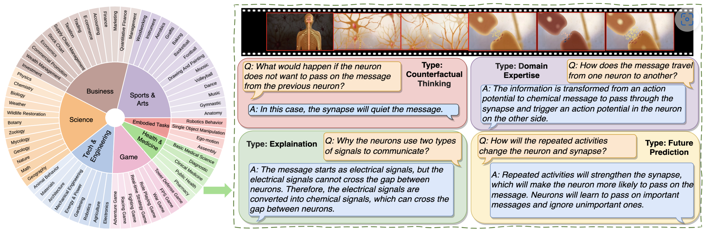
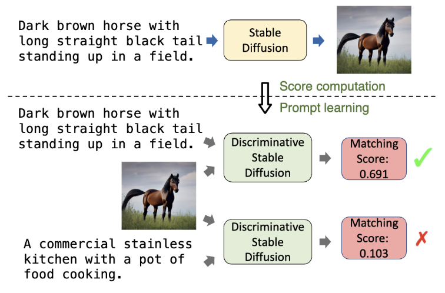
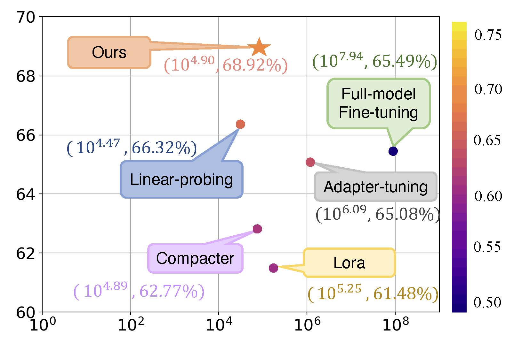

Xuehai He was a Ph.D. in Computer Science at the University of California, Santa Cruz working with Xin Eric Wang. His research work mainly revolves around Multimodal Learning and Machine Learning. Previously, he was at University of California, San Diego working with Prof. Pengtao Xie. He began his research and undergraduate study at the University of Electronic Science and Technology of China, located in the beautiful city of Chengdu, China.
🔥 News
- 2025.02: Co-organize the CVPR 2025 Workshop -- Computer Vision in the Wild. Host our MMWorld benchmark there.
- 2025.02: One paper accepted to CVPR 2025.
- 2025.01: Two papers accepted to ICLR 2025.
- 2024.01: Join Microsoft as a research intern again.
📝 Selected Publications
* indicates equal contribution

Xuehai He, Weixi Feng, Kaizhi Zheng, Yujie Lu, Wanrong Zhu, Jiachen Li, Yue Fan, Jianfeng Wang, Linjie Li, Zhengyuan Yang, Kevin Lin, William Yang Wang, Lijuan Wang, Xin Eric Wang. MMWorld: Towards Multi-discipline Multi-faceted World Model Evaluation in Videos. ICLR, 2025. [Project]

Xuehai He, Weixi Feng, Tsu-Jui Fu, Varun Jampani, Arjun Akula, Pradyumna Narayana, Sugato Basu, William Yang Wang, Xin Eric Wang. Discffusion: Discriminative Diffusion Models as Few-shot Vision and Language Learners. TMLR, 2024. [Project]

Xuehai He, Chunyuan Li, Pengchuan Zhang, Jianwei Yang, Xin Eric Wang. Parameter-efficient Model Adaptation for Vision Transformers. AAAI, 2023. [Project]
📰 Selected Preprints
🚲 Service
- Conference Reviewer: ICASSP'19, IJCAI'21, AAAI'21, CVPR'21-'24, ICCV'21-'23, ECCV'22, NeurIPS'22-'23, EMNLP'22-'23, ACL'23-'24, ICML'23-'24.
- Journal Reviewer: IEEE Access'19'20; TPAMI'24.
- Program Committee Member:
- NeurIPS 2021 Workshop: Self-Supervised Learning -- Theory and Practice [Link]
- Workshop Co-organizer:
- Workshop Reviewer: